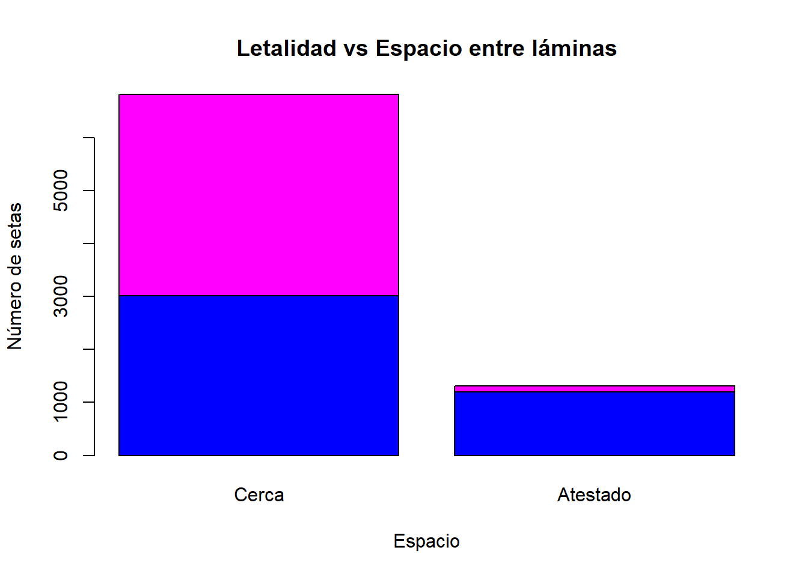

4 Preprocesado de datos.
Para poder tranformar las variables en factor, lo haremos mediante as.factor() a todas las variables de los datos.
Ahora podemos ver mejor como son nuestros datos.
summary(datos.setas_train)## Letalidad Forma_S Cuticula Color_S Escamas Olor Fijacion_L
## e:2522 b: 252 f:1401 n :1394 f:2868 n :2127 a: 114
## p:2352 c: 2 g: 3 g :1103 t:2006 f :1276 f:4760
## f:1882 s:1529 e : 903 s : 365
## k: 489 y:1941 y : 626 y : 348
## s: 21 w : 615 a : 234
## x:2228 b : 96 l : 228
## (Other): 137 (Other): 296
## Espacio_L Tamaño_L Color_L Forma_T Tallo_raiz Superficie_T1
## c:4097 b:3329 b :1062 e:2089 ?:1499 f: 325
## w: 777 n:1545 p : 883 t:2785 b:2236 k:1413
## w : 701 c: 324 s:3124
## n : 623 e: 701 y: 12
## g : 459 r: 114
## h : 426
## (Other): 720
## Superficie_T2 Color_T1 Color_T2 Tipo_V Color_V N_anillos
## f: 369 w :2681 w :2632 p:4874 n: 53 n: 19
## k:1376 p :1127 p :1132 o: 54 o:4511
## s:2965 g : 358 g : 354 w:4763 t: 344
## y: 164 n : 270 n : 310 y: 4
## b : 248 b : 255
## o : 107 o : 107
## (Other): 83 (Other): 84
## Tipo_anillo Color_esporas Poblacion Habitat
## e:1708 w :1448 a: 241 d:1900
## f: 32 n :1219 c: 204 g:1284
## l: 768 k :1113 n: 223 l: 509
## n: 19 h : 959 s: 735 m: 163
## p:2347 r : 39 v:2434 p: 680
## o : 26 y:1037 u: 222
## (Other): 70 w: 116Una de las variables, Tipo_v (tipo de volva) con dos niveles distintos, parcial (p) y universal (u), podríamos eliminarla de nuestros datos pues todo la frecuencia solo está en uno de los niveles, luego no aporta información alguna para determinar si es venenosa o comestible.
datos.setas_train=datos.setas_train[,-17]Además, la variable Fijacion_L tendría solo dos niveles pues en el nivel descendente y entallado no aparecen en los datos y la variable Espacio_L también tiene dos niveles pues el nivel distante tampoco aparece, por ello las codificamos mediante unas variable binomiales.
Codificamos el resto de las variables originales de forma que obtendremos también nuevas variables binomiales, excepto las variables relacionadas con el color que las codificaremos siguiendo la escala de colores.
#6 primeras observaciones de los datos ya codificados
head(setas)## Venenosas Campana Cónica Convexa Plana Nudosa Hundida Fibroso Surcos Escamoso
## 1 0 1 0 0 0 0 0 0 0 0
## 2 0 1 0 0 0 0 0 0 0 0
## 3 0 1 0 0 0 0 0 0 0 1
## 4 1 0 0 1 0 0 0 0 0 1
## 5 0 0 0 1 0 0 0 0 0 1
## 6 0 0 0 1 0 0 0 0 0 1
## Liso S_Marrón S_Ante S_Canela S_Gris S_Verde S_Rosa S_Morado S_Rojo S_Blanco
## 1 1 1 0 0 0 0 0 0 0 0
## 2 1 0 0 0 0 0 0 0 0 0
## 3 0 0 0 0 0 0 0 0 0 1
## 4 0 0 0 0 0 0 0 0 0 1
## 5 0 0 0 0 1 0 0 0 0 0
## 6 0 0 0 0 0 0 0 0 0 0
## S_Amarillo Escamas O_almendra O_anís O_creosota O_pescado O_asqueroso
## 1 0 1 0 1 0 0 0
## 2 1 1 1 0 0 0 0
## 3 0 1 0 1 0 0 0
## 4 0 1 0 0 0 0 0
## 5 0 1 0 1 0 0 0
## 6 1 1 1 0 0 0 0
## O_mohoso O_ninguno O_acre O_picante Adjunto/Libre Cerca/Atestado
## 1 0 0 0 0 0 1
## 2 0 0 0 0 0 1
## 3 0 0 0 0 0 1
## 4 0 0 1 0 0 1
## 5 0 0 0 0 0 1
## 6 0 0 0 0 0 1
## Ancho/Estrecho L_Negro L_Marrón L_Canela L_Chocolate L_Gris L_Verde L_Naranja
## 1 1 1 0 0 0 0 0 0
## 2 1 1 0 0 0 0 0 0
## 3 1 0 1 0 0 0 0 0
## 4 0 0 1 0 0 0 0 0
## 5 1 1 0 0 0 0 0 0
## 6 1 0 1 0 0 0 0 0
## L_Rosa L_Morado L_Rojo L_Blanco L_Amarillo Agrandado/Afilado TR_bulboso
## 1 0 0 0 0 0 1 0
## 2 0 0 0 0 0 1 0
## 3 0 0 0 0 0 1 0
## 4 0 0 0 0 0 1 0
## 5 0 0 0 0 0 1 0
## 6 0 0 0 0 0 1 0
## TR_club TR_copa TR_igual TR_rizomorfos TR_enraizado TR_faltante ST1_Fibroso
## 1 1 0 0 0 0 0 0
## 2 1 0 0 0 0 0 0
## 3 1 0 0 0 0 0 0
## 4 0 0 1 0 0 0 0
## 5 1 0 0 0 0 0 0
## 6 1 0 0 0 0 0 0
## ST1_Escamoso ST1_Sedoso ST1_Liso ST2_Fibroso ST2_Escamoso ST2_Sedoso ST2_Liso
## 1 0 0 1 0 0 0 1
## 2 0 0 1 0 0 0 1
## 3 0 0 1 0 0 0 1
## 4 0 0 1 0 0 0 1
## 5 0 0 1 0 0 0 1
## 6 0 0 1 0 0 0 1
## CT1_marron CT1_ante CT1_canela CT1_gris CT1_naranja CT1_rosa CT1_rojo
## 1 0 0 0 0 0 0 0
## 2 0 0 0 0 0 0 0
## 3 0 0 0 0 0 0 0
## 4 0 0 0 0 0 0 0
## 5 0 0 0 0 0 0 0
## 6 0 0 0 0 0 0 0
## CT1_blanco CT1_amarillo CT2_marron CT2_ante CT2_canela CT2_gris CT2_naranja
## 1 1 0 0 0 0 0 0
## 2 1 0 0 0 0 0 0
## 3 1 0 0 0 0 0 0
## 4 1 0 0 0 0 0 0
## 5 1 0 0 0 0 0 0
## 6 1 0 0 0 0 0 0
## CT2_rosa CT2_rojo CT2_blanco CT2_amarillo V_Marrón V_Naranja V_Blanco
## 1 0 0 1 0 0 0 1
## 2 0 0 1 0 0 0 1
## 3 0 0 1 0 0 0 1
## 4 0 0 1 0 0 0 1
## 5 0 0 1 0 0 0 1
## 6 0 0 1 0 0 0 1
## V_Amarillo NA_0 NA_1 NA_2 TA_Telaraña TA_Evanescente TA_Abocinado TA_Grande
## 1 0 0 1 0 0 0 0 0
## 2 0 0 1 0 0 0 0 0
## 3 0 0 1 0 0 0 0 0
## 4 0 0 1 0 0 0 0 0
## 5 0 0 1 0 0 0 0 0
## 6 0 0 1 0 0 0 0 0
## TA_Ninguno TA_Colgante TA_Revestimiento TA_Zona CE_negro CE_marron CE_ante
## 1 0 1 0 0 0 1 0
## 2 0 1 0 0 1 0 0
## 3 0 1 0 0 0 1 0
## 4 0 1 0 0 1 0 0
## 5 0 1 0 0 0 1 0
## 6 0 1 0 0 1 0 0
## CE_chocolate CE_verde CE_naranja CE_morado CE_blanco CE_amarillo Abundante
## 1 0 0 0 0 0 0 0
## 2 0 0 0 0 0 0 0
## 3 0 0 0 0 0 0 0
## 4 0 0 0 0 0 0 0
## 5 0 0 0 0 0 0 0
## 6 0 0 0 0 0 0 0
## Agrupada Numerosa Dispersa Varias Solitaria Bosques Pastos Hojas Prados
## 1 0 1 0 0 0 0 0 0 1
## 2 0 1 0 0 0 0 0 0 1
## 3 0 0 1 0 0 0 0 0 1
## 4 0 0 0 1 0 0 1 0 0
## 5 0 1 0 0 0 0 1 0 0
## 6 0 0 1 0 0 0 0 0 1
## Caminos Urbano Desechos
## 1 0 0 0
## 2 0 0 0
## 3 0 0 0
## 4 0 0 0
## 5 0 0 0
## 6 0 0 0#Dimensión
dim(setas)## [1] 4874 1174.1 EDA. Exploratory Data Analysis.
4.1.1 Letalidad:
La variable letalidad tiene dos niveles distintos, venenosa (p) o comestible (e), la frecuencia relativa correspondiente a nuestros datos es:
#Tabla:
table(setas$Venenosas)##
## 0 1
## 2522 2352#Tabla de frecuencias:
prop.table(table(setas$Venenosas))##
## 0 1
## 0.5174395 0.4825605#Gráfico
barplot(table(setas$Venenosas),main="Letalidad",ylab="Número de setas",col=c("blue","magenta"),names.arg=c("Comestible","Venenosa"))
4.2 Correlación entre las variables.
Vamos a comprobar si existe alguna correlación entre las distintas variables.
4.2.1 Forma del sombrero (Forma_S)
#Tabla de frecuencias letalidad~forma del sombrero
table(datos.setas_train$Letalidad,datos.setas_train$Forma_S)##
## b c f k s x
## e 229 0 960 133 21 1179
## p 23 2 922 356 0 1049#Gráfico letalidad~forma del sombrero
barplot(table(datos.setas_train$Letalidad,datos.setas_train$Forma_S),main="Letalidad vs Forma del sombrero",xlab="Forma",ylab="Número de setas",names.arg=c("Campana", "Cónica", "Plana", "Nudosa", "Hundida", "Convexa"),col=c("blue","magenta"))
#Test de independencia:
chisq.test(table(datos.setas_train$Letalidad,datos.setas_train$Forma_S))## Warning in chisq.test(table(datos.setas_train$Letalidad,
## datos.setas_train$Forma_S)): Chi-squared approximation may be incorrect##
## Pearson's Chi-squared test
##
## data: table(datos.setas_train$Letalidad, datos.setas_train$Forma_S)
## X-squared = 295.88, df = 5, p-value < 2.2e-164.2.2 Cutícula
#Tabla de frecuencias letalidad~cuticula
table(datos.setas_train$Letalidad,datos.setas_train$Cuticula)##
## f g s y
## e 942 0 669 911
## p 459 3 860 1030#Gráfico letalidad~cuticula
barplot(table(datos.setas_train$Letalidad,datos.setas_train$Cuticula),main="Letalidad vs Cuticula",xlab="Cuticula",ylab="Número de setas",names.arg=c("Fibroso", "Con surcos", "Lisa", "Escamosa"),col=c("blue","magenta"))
#Test de independencia:
chisq.test(table(datos.setas_train$Letalidad,datos.setas_train$Cuticula))## Warning in chisq.test(table(datos.setas_train$Letalidad,
## datos.setas_train$Cuticula)): Chi-squared approximation may be incorrect##
## Pearson's Chi-squared test
##
## data: table(datos.setas_train$Letalidad, datos.setas_train$Cuticula)
## X-squared = 194.98, df = 3, p-value < 2.2e-164.2.3 Color del sombrero (Color_S)
#Tabla de frecuencias letalidad~color del sombrero
table(datos.setas_train$Letalidad,datos.setas_train$Color_S)##
## b c e g n p r u w y
## e 28 21 375 632 760 34 12 11 417 232
## p 68 6 528 471 634 53 0 0 198 394#Gráfico letalidad~color del sombrero
barplot(table(datos.setas_train$Letalidad,datos.setas_train$Color_S),main="Letalidad vs Color del sombrero",xlab="Color",ylab="Número de setas",names.arg=c("Ante", "Canela", "Rojo", "Gris","Marrón","Rosa","Verde","Morado","Blanco","Amarillo"),col=c("blue","magenta"))
#Test de independencia:
chisq.test(table(datos.setas_train$Letalidad,datos.setas_train$Color_S))##
## Pearson's Chi-squared test
##
## data: table(datos.setas_train$Letalidad, datos.setas_train$Color_S)
## X-squared = 227.22, df = 9, p-value < 2.2e-164.2.4 Escamas
#Tabla de frecuencias letalidad~escamas
table(datos.setas_train$Letalidad,datos.setas_train$Escamas)##
## f t
## e 882 1640
## p 1986 366#Gráfico letalidad~escamas
barplot(table(datos.setas_train$Letalidad,datos.setas_train$Escamas),main="Letalidad vs Escamas",xlab="Escamas",ylab="Número de setas",names.arg=c("Sin escamas", "Con escamas"),col=c("blue","magenta"))
#Test de independencia:
chisq.test(table(datos.setas_train$Letalidad,datos.setas_train$Escamas))##
## Pearson's Chi-squared test with Yates' continuity correction
##
## data: table(datos.setas_train$Letalidad, datos.setas_train$Escamas)
## X-squared = 1227.6, df = 1, p-value < 2.2e-164.2.5 Olor
#Tabla de frecuencias letalidad~olor
table(datos.setas_train$Letalidad,datos.setas_train$Olor)##
## a c f l m n p s y
## e 234 0 0 228 0 2060 0 0 0
## p 0 114 1276 0 19 67 163 365 348#Gráfico letalidad~olor
barplot(table(datos.setas_train$Letalidad,datos.setas_train$Olor),main="Letalidad vs Olor",xlab="Olor",ylab="Número de setas",names.arg=c("Almendra", "Creosota","Asqueroso","Anís","Mohoso","Ninguno","Acre","Picante","Pescado"),col=c("blue","magenta"))
#Test de independencia:
chisq.test(table(datos.setas_train$Letalidad,datos.setas_train$Olor))##
## Pearson's Chi-squared test
##
## data: table(datos.setas_train$Letalidad, datos.setas_train$Olor)
## X-squared = 4614.1, df = 8, p-value < 2.2e-16Podemos observar que la variable olor se distribuye entre los distintos tipos de olor de forma binaria, es decir, todas las setas que presentan un olor del tipo creosota, asqueroso, mohoso, acre, picante o pesacado son venenosas mientras que si presentan un olor del tipo almendar, anís o ninguno son comestibles. Entonces modríamos cambiar la codificación hecha anteriormente y tener solo una variable codificada de forma binaria de tal forma que para los olores que producen que la seta sea venenosa darles el valor 1 y para los que no, darles el valor 0.
4.2.6 Fijación de las láminas (Fijacion_L)
#Tabla de frecuencias letalidad~fijación de las láminas
table(datos.setas_train$Letalidad,datos.setas_train$Fijacion_L)##
## a f
## e 107 2415
## p 7 2345#Gráfico letalidad~fijación de las láminas
barplot(table(datos.setas_train$Letalidad,datos.setas_train$Fijacion_L),main="Letalidad vs Fijación de las láminas",xlab="Fijación",ylab="Número de setas",names.arg=c("Adjunto", "Libre"),col=c("blue","magenta"))
#Test de independencia:
chisq.test(table(datos.setas_train$Letalidad,datos.setas_train$Fijacion_L))##
## Pearson's Chi-squared test with Yates' continuity correction
##
## data: table(datos.setas_train$Letalidad, datos.setas_train$Fijacion_L)
## X-squared = 81.202, df = 1, p-value < 2.2e-16Podemos ver que la proporción de que la seta sea venenosa o comestible según la fijación de las láminas en el caso de que estén libre es casi del 50% mientras que si están adjuntas la proporción cambia a un 94% frente a un 6%, comestible o venenosa, respectivamente.
#Proporción según fijacion sea adjunto
prop.table(table(datos.setas_train$Letalidad,datos.setas_train$Fijacion_L)[,1])*100## e p
## 93.859649 6.140351#Proporción según fijacion sea libre
prop.table(table(datos.setas_train$Letalidad,datos.setas_train$Fijacion_L)[,2])*100## e p
## 50.73529 49.264714.2.7 Espacio entre láminas (Espacio_L)
#Tabla de frecuencias letalidad~espacio entre láminas
table(datos.setas_train$Letalidad,datos.setas_train$Espacio_L)##
## c w
## e 1805 717
## p 2292 60#Gráfico letalidad~espacio entre láminas
barplot(table(datos.setas_train$Letalidad,datos.setas_train$Espacio_L),main="Letalidad vs Espacio entre láminas",xlab="Espacio",ylab="Número de setas",names.arg=c("Cerca", "Atestado"),col=c("blue","magenta"))
#Test de independencia:
chisq.test(table(datos.setas_train$Letalidad,datos.setas_train$Espacio_L))##
## Pearson's Chi-squared test with Yates' continuity correction
##
## data: table(datos.setas_train$Letalidad, datos.setas_train$Espacio_L)
## X-squared = 606.3, df = 1, p-value < 2.2e-16Podemos ver que ocurre algo parecido que en la variable fijacion_L, la proporción de que la seta sea venenosa o comestible según el espacio entre las láminas en el caso de que estén cerca es casi del 50% mientras que si están atestado la proporción cambia a un 92% frente a un 8%, comestible o venenosa, respectivamente.
#Proporción según espacio sea cerca
prop.table(table(datos.setas_train$Letalidad,datos.setas_train$Espacio_L)[,1])*100## e p
## 44.05663 55.94337#Proporción según espacio sea atestado
prop.table(table(datos.setas_train$Letalidad,datos.setas_train$Espacio_L)[,2])*100## e p
## 92.277992 7.7220084.2.8 Tamaño de las láminas (Tamaño_L)
#Tabla de frecuencias letalidad~tamaño de las láminas
table(datos.setas_train$Letalidad,datos.setas_train$Tamaño_L)##
## b n
## e 2344 178
## p 985 1367#Gráfico letalidad~tamaño de las láminas
barplot(table(datos.setas_train$Letalidad,datos.setas_train$Tamaño_L),main="Letalidad vs Tamaño de las láminas",xlab="Tamaño",ylab="Número de setas",names.arg=c("Ancho", "Estrecho"),col=c("blue","magenta"))
#Test de independencia:
chisq.test(table(datos.setas_train$Letalidad,datos.setas_train$Tamaño_L))##
## Pearson's Chi-squared test with Yates' continuity correction
##
## data: table(datos.setas_train$Letalidad, datos.setas_train$Tamaño_L)
## X-squared = 1463.3, df = 1, p-value < 2.2e-16Podemos ver que la proporción de que la seta sea venenosa o comestible según el tamaño de las láminas en el caso de que sea ancha es del 30% frente a 70%, respectivamente, mientras que si es estrecho la proporción cambia a un 11.5% frente a un 88.5%, respectivamente.
#Proporción según tamaño sea ancho
prop.table(table(datos.setas_train$Letalidad,datos.setas_train$Tamaño_L)[,1])*100## e p
## 70.41153 29.58847#Proporción según tamaño sea estrecho
prop.table(table(datos.setas_train$Letalidad,datos.setas_train$Tamaño_L)[,2])*100## e p
## 11.52104 88.478964.2.9 Color de las láminas (Color_L)
#Tabla de frecuencias letalidad~color de las láminas
table(datos.setas_train$Letalidad,datos.setas_train$Color_L)##
## b e g h k n o p r u w y
## e 0 58 148 124 218 559 36 515 0 272 556 36
## p 1062 0 311 302 43 64 0 368 15 28 145 14#Gráfico letalidad~color de las láminas
barplot(table(datos.setas_train$Letalidad,datos.setas_train$Color_L),main="Letalidad vs Color de las láminas",xlab="Color",ylab="Número de setas",names.arg=c("Ante", "Rojo","Gris","Chocolate","Negro","Marrón","Naranja","Rosa","Verde","Morado","Blanco","Amarillo"),col=c("blue","magenta"))
#Test de independencia:
chisq.test(table(datos.setas_train$Letalidad,datos.setas_train$Color_L))##
## Pearson's Chi-squared test
##
## data: table(datos.setas_train$Letalidad, datos.setas_train$Color_L)
## X-squared = 2284.3, df = 11, p-value < 2.2e-164.2.10 Forma del tallo (Forma_T)
#Tabla de frecuencias letalidad~forma del tallo
table(datos.setas_train$Letalidad,datos.setas_train$Forma_T)##
## e t
## e 958 1564
## p 1131 1221#Gráfico letalidad~forma del tallo
barplot(table(datos.setas_train$Letalidad,datos.setas_train$Forma_T),main="Letalidad vs Forma del tallo",xlab="Tallo",ylab="Número de setas",names.arg=c("Agrandado", "Afilado"),col=c("blue","magenta"))
#Test de independencia:
chisq.test(table(datos.setas_train$Letalidad,datos.setas_train$Forma_T))##
## Pearson's Chi-squared test with Yates' continuity correction
##
## data: table(datos.setas_train$Letalidad, datos.setas_train$Forma_T)
## X-squared = 50.291, df = 1, p-value = 1.325e-12Podemos ver que la proporción de que la seta sea venenosa o comestible según el forma del tallo es casi del 50% en ambos formas del tallo
#Proporción según forma sea agrandado
prop.table(table(datos.setas_train$Letalidad,datos.setas_train$Forma_T)[,1])*100## e p
## 45.85926 54.14074#Proporción según forma sea afilado
prop.table(table(datos.setas_train$Letalidad,datos.setas_train$Forma_T)[,2])*100## e p
## 56.15799 43.842014.2.11 Tallo-Raíz (Tallo_raiz)
#Tabla de frecuencias letalidad~tallo-raiz
table(datos.setas_train$Letalidad,datos.setas_train$Tallo_raiz)##
## ? b c e r
## e 418 1151 301 538 114
## p 1081 1085 23 163 0#Gráfico letalidad~tallo-raiz
barplot(table(datos.setas_train$Letalidad,datos.setas_train$Tallo_raiz),main="Letalidad vs Tallo-Raiz",xlab="Tallo-Raiz",ylab="Número de setas",names.arg=c("Faltante", "Bulboso","Club","Igual","Enraizado"),col=c("blue","magenta"))
#Test de independencia:
chisq.test(table(datos.setas_train$Letalidad,datos.setas_train$Tallo_raiz))##
## Pearson's Chi-squared test
##
## data: table(datos.setas_train$Letalidad, datos.setas_train$Tallo_raiz)
## X-squared = 843.42, df = 4, p-value < 2.2e-164.2.12 Superficie del tallo por encima del anillo (Superficie_T1)
#Tabla de frecuencias letalidad~supercifie del tallo por encima del anillo
table(datos.setas_train$Letalidad,datos.setas_train$Superficie_T1)##
## f k s y
## e 248 85 2181 8
## p 77 1328 943 4#Gráfico letalidad~superficie del tallo por encima del anillo
barplot(table(datos.setas_train$Letalidad,datos.setas_train$Superficie_T1),main="Letalidad vs Tallo por encima del anillo",xlab="Superficie",ylab="Número de setas",names.arg=c("Fibroso", "Sedoso","Liso","Escamoso"),col=c("blue","magenta"))
#Test de independencia:
chisq.test(table(datos.setas_train$Letalidad,datos.setas_train$Superficie_T1))##
## Pearson's Chi-squared test
##
## data: table(datos.setas_train$Letalidad, datos.setas_train$Superficie_T1)
## X-squared = 1671.5, df = 3, p-value < 2.2e-164.2.13 Superficie del tallo por debajo del anillo (Superficie_T2)
#Tabla de frecuencias letalidad~supercifie del tallo por debajo del anillo
table(datos.setas_train$Letalidad,datos.setas_train$Superficie_T2)##
## f k s y
## e 290 86 2024 122
## p 79 1290 941 42#Gráfico letalidad~superficie del tallo por debajo del anillo
barplot(table(datos.setas_train$Letalidad,datos.setas_train$Superficie_T2),main="Letalidad vs Tallo por debajo del anillo",xlab="Superficie",ylab="Número de setas",names.arg=c("Fibroso", "Sedoso","Liso","Escamoso"),col=c("blue","magenta"))
#Test de independencia:
chisq.test(table(datos.setas_train$Letalidad,datos.setas_train$Superficie_T2))##
## Pearson's Chi-squared test
##
## data: table(datos.setas_train$Letalidad, datos.setas_train$Superficie_T2)
## X-squared = 1604.8, df = 3, p-value < 2.2e-164.2.14 Color del tallo por encima del anillo (Color_T1)
#Tabla de frecuencias letalidad~color del tallo por encima del anillo
table(datos.setas_train$Letalidad,datos.setas_train$Color_T1)##
## b c e g n o p w y
## e 0 0 60 358 8 107 336 1653 0
## p 248 19 0 0 262 0 791 1028 4#Gráfico letalidad~color del tallo por encima del anillo
barplot(table(datos.setas_train$Letalidad,datos.setas_train$Color_T1),main="Letalidad vs Tallo por encima del anillos",xlab="Color",ylab="Número de setas",names.arg=c("Ante", "Canela","Rojo","Gris","Marrón","Naranja","Rosa","Blanco","Amarillo"),col=c("blue","magenta"))
#Test de independencia:
chisq.test(table(datos.setas_train$Letalidad,datos.setas_train$Color_T1))## Warning in chisq.test(table(datos.setas_train$Letalidad,
## datos.setas_train$Color_T1)): Chi-squared approximation may be incorrect##
## Pearson's Chi-squared test
##
## data: table(datos.setas_train$Letalidad, datos.setas_train$Color_T1)
## X-squared = 1360.1, df = 8, p-value < 2.2e-164.2.15 Color del tallo por debajo del anillo (Color_T2)
#Tabla de frecuencias letalidad~color del tallo por debajo del anillo
table(datos.setas_train$Letalidad,datos.setas_train$Color_T2)##
## b c e g n o p w y
## e 0 0 52 354 42 107 340 1627 0
## p 255 19 0 0 268 0 792 1005 13#Gráfico letalidad~color del tallo por debajo del anillo
barplot(table(datos.setas_train$Letalidad,datos.setas_train$Color_T2),main="Letalidad vs Tallo por debajo del anillos",xlab="Color",ylab="Número de setas",names.arg=c("Ante", "Canela","Rojo","Gris","Marrón","Naranja","Rosa","Blanco","Amarillo"),col=c("blue","magenta"))
#Test de independencia:
chisq.test(table(datos.setas_train$Letalidad,datos.setas_train$Color_T2))##
## Pearson's Chi-squared test
##
## data: table(datos.setas_train$Letalidad, datos.setas_train$Color_T2)
## X-squared = 1287.9, df = 8, p-value < 2.2e-164.2.16 Color del volva (Color_V)
#Tabla de frecuencias letalidad~color del volva
table(datos.setas_train$Letalidad,datos.setas_train$Color_V)##
## n o w y
## e 53 54 2415 0
## p 0 0 2348 4#Gráfico letalidad~color del volva
barplot(table(datos.setas_train$Letalidad,datos.setas_train$Color_V),main="Letalidad vs Volva",xlab="Color",ylab="Número de setas",names.arg=c("Marrón", "Naranja","Blanco","Amarillo"),col=c("blue","magenta"))
#Test de independencia:
chisq.test(table(datos.setas_train$Letalidad,datos.setas_train$Color_V))## Warning in chisq.test(table(datos.setas_train$Letalidad,
## datos.setas_train$Color_V)): Chi-squared approximation may be incorrect##
## Pearson's Chi-squared test
##
## data: table(datos.setas_train$Letalidad, datos.setas_train$Color_V)
## X-squared = 106.14, df = 3, p-value < 2.2e-164.2.17 Número de anillos (N_anillos)
#Tabla de frecuencias letalidad~numero de anillos
table(datos.setas_train$Letalidad,datos.setas_train$N_anillos)##
## n o t
## e 0 2217 305
## p 19 2294 39#Gráfico letalidad~numero de anillos
barplot(table(datos.setas_train$Letalidad,datos.setas_train$N_anillos),main="Letalidad vs Anillos",xlab="Número",ylab="Número de setas",names.arg=c("Ninguno", "Uno","Dos"),col=c("blue","magenta"))
#Test de independencia:
chisq.test(table(datos.setas_train$Letalidad,datos.setas_train$N_anillos))##
## Pearson's Chi-squared test
##
## data: table(datos.setas_train$Letalidad, datos.setas_train$N_anillos)
## X-squared = 220.34, df = 2, p-value < 2.2e-164.2.18 Tipo de anillo (Tipo_anillo)
#Tabla de frecuencias letalidad~tipo de anillo
table(datos.setas_train$Letalidad,datos.setas_train$Tipo_anillo)##
## e f l n p
## e 623 32 0 0 1867
## p 1085 0 768 19 480#Gráfico letalidad~tipo de anillo
barplot(table(datos.setas_train$Letalidad,datos.setas_train$Tipo_anillo),main="Letalidad vs Anillo",xlab="Tipo",ylab="Número de setas",names.arg=c("Evanescente", "Abocinado","Grande","Ninguno","Colgante"),col=c("blue","magenta"))
#Test de independencia:
chisq.test(table(datos.setas_train$Letalidad,datos.setas_train$Tipo_anillo))##
## Pearson's Chi-squared test
##
## data: table(datos.setas_train$Letalidad, datos.setas_train$Tipo_anillo)
## X-squared = 1759.9, df = 4, p-value < 2.2e-164.2.19 Color de las esporas
#Tabla de frecuencias letalidad~color de las esporas
table(datos.setas_train$Letalidad,datos.setas_train$Color_esporas)##
## b h k n o r u w y
## e 24 32 975 1080 26 0 20 339 26
## p 0 927 138 139 0 39 0 1109 0#Gráfico letalidad~color de las esporas
barplot(table(datos.setas_train$Letalidad,datos.setas_train$Color_esporas),main="Letalidad vs Esporas",xlab="Color",ylab="Número de setas",names.arg=c("Ante", "Chocolate","Negro","Marrón","Naranja","Verde","Morado","Blanco","Amarillo"),col=c("blue","magenta"))
#Test de independencia:
chisq.test(table(datos.setas_train$Letalidad,datos.setas_train$Color_esporas))##
## Pearson's Chi-squared test
##
## data: table(datos.setas_train$Letalidad, datos.setas_train$Color_esporas)
## X-squared = 2733, df = 8, p-value < 2.2e-16Podemos observar que aquellas setas que tengan el color de las esporas ante, naranja, morado o amarillo son comestibles.
4.2.20 Habitat
#Tabla de frecuencias letalidad~habitat
table(datos.setas_train$Letalidad,datos.setas_train$Habitat)##
## d g l m p u w
## e 1130 849 141 142 79 65 116
## p 770 435 368 21 601 157 0#Gráfico letalidad~habitat
barplot(table(datos.setas_train$Letalidad,datos.setas_train$Habitat),main="Letalidad",xlab="Habitat",ylab="Número de setas",names.arg=c("bosques", "pastos", "hojas", "prados", "caminos", "urbano", "desechos"),col=c("blue","magenta"))
#legend(x = "topright", legend = c("Comestible","Venenosa"), fill = c("blue", "magenta"))4.2.21 Población
#Tabla de frecuencias letalidad~poblacion
table(datos.setas_train$Letalidad,datos.setas_train$Poblacion)##
## a c n s v y
## e 241 176 223 530 707 645
## p 0 28 0 205 1727 392#Gráfico letalidad~poblacion
barplot(table(datos.setas_train$Letalidad,datos.setas_train$Poblacion),main="Letalidad",xlab="Poblacion",ylab="Número de setas",names.arg=c("abundante", "agrupada", "numerosa", "dispersa", "varias", "solitaria"),col=c("blue","magenta"))
#legend(x = "topright", legend = c("Comestible","Venenosa"), fill = c("blue", "magenta"))